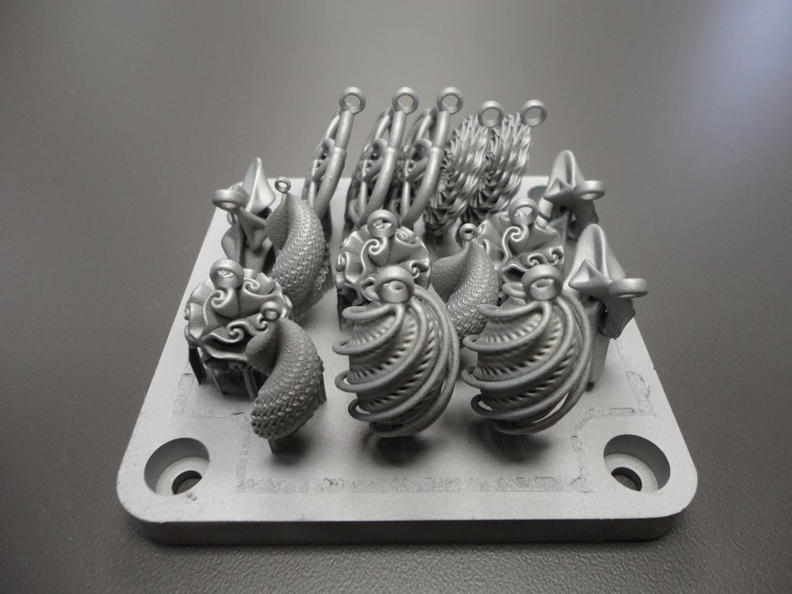

<app-print-list class="print-list"></app-print-list>

<div class="print-container">
  <div class="image">
    
  </div>
  <div class="data">
    <div *ngIf="print != null">
      <h1>Print</h1>
      <div class="content-container">
        <div class="part-container">
          <div class="input-container" *ngIf="!createMode">
            <label>SLM-ID:</label>
            <input type="text" [(ngModel)]="print.slm_id" disabled/>
          </div>
          <div class="input-container">
            <label>Build:</label>
            <select [(ngModel)]="print.build_id" *ngIf="!viewMode" (change)="updateRelatedBuild()">
              <option *ngFor="let build of builds" [ngValue]="build.build_id">
                {{buildName(build.build_id)}}
              </option>
            </select>
            <!-- Using an input field here is somewhat hacky. It would be better to use an ordinary <p> or <span> tag
                 and just make sure that the text styling is the same as for a disabled input field. -->
            <input  type="text" [(ngModel)]="relatedBuildName" *ngIf="viewMode" disabled/>
          </div>
          <div class="input-container">
            <label>Operator:</label>
            <input  type="text" [(ngModel)]="print.operator" disabled="{{viewMode}}"/>
          </div>
          <div class="input-container">
            <label>Start Time:</label>
            <input  type="text" [(ngModel)]="print.start_time" disabled="{{viewMode}}"/>
          </div>
          <div class="input-container">
            <label>End Time:</label>
            <input  type="text" [(ngModel)]="print.end_time" disabled="{{viewMode}}"/>
          </div>
          <div class="input-container">
            <label>Print time:</label>
            <input  type="number" [(ngModel)]="print.calculated_print_time" disabled="{{viewMode}}"/>
          </div>
          <div class="input-container">
            <label>Machine Type:</label>
            <input  type="text" [(ngModel)]="print.machine_type" disabled="{{viewMode}}"/>
          </div>
          <div class="input-container">
            <label>Platform Material:</label>
            <input  type="text" [(ngModel)]="print.platform_material" disabled="{{viewMode}}"/>
          </div>
          <div class="input-container">
            <label>Platform Weight:</label>
            <input  type="number" [(ngModel)]="print.platform_weight" disabled="{{viewMode}}"/>
          </div>
        </div>
        <div class="part-container">
          <div class="input-container">
            <label>Powder Start Weight:</label>
            <input  type="number" [(ngModel)]="print.powder_start_weight" disabled="{{viewMode}}"/>
          </div>
          <div class="input-container">
            <label>Platform End Weight:</label>
            <input  type="number" [(ngModel)]="print.powder_end_weight" disabled="{{viewMode}}"/>
          </div>
            <div class="input-container">
              <label>Powder Waste:</label>
              <input  type="number" [(ngModel)]="print.powder_waste" disabled="{{viewMode}}"/>
            </div>
            <div class="input-container">
              <label>Powder Condition:</label>
              <input  type="text" [(ngModel)]="print.powder_condition" disabled="{{viewMode}}"/>
            </div>
            <div class="input-container">
              <label>Number of layers:</label>
              <input  type="number" [(ngModel)]="print.number_of_layers" disabled="{{viewMode}}"/>
            </div>
            <div class="input-container">
              <label>Min exposure time:</label>
              <input  type="number" [(ngModel)]="print.min_exposure_time" disabled="{{viewMode}}"/>
            </div>
            <div class="input-container">
              <label>DCP factor:</label>
              <input  type="number" [(ngModel)]="print.dcp_factor" disabled="{{viewMode}}"/>
            </div>
            <div class="input-container">
              <label>Base Cutting:</label>
              <input  type="text" [(ngModel)]="print.base_cutting" disabled="{{viewMode}}"/>
            </div>
        </div>
      </div>
      <div class="input-container">
        <label>Comment:</label>
        <textarea [(ngModel)]="print.comment" disabled="{{viewMode}}"></textarea>
      </div>
    </div>
    <div>


    <div *ngIf="viewMode && !createMode">
      <button class="btn-rasied btn-danger" (click)="remove()">Delete</button>
      <button class="btn-rasied btn-light" (click)="toggleEdit()">Edit</button>
      <button class="btn-rasied btn-success" [routerLink]="['/print', 'new']">New</button>
    </div>
    <div *ngIf="!viewMode && !createMode">
      <button class="btn-rasied btn-danger" (click)="reset()">Reset</button>
      <button class="btn-rasied btn-success" (click)="save()">Save</button>
    </div>
    <div *ngIf="createMode">
      <button class="btn-rasied btn-danger" (click)="reset()">Discard</button>
      <button class="btn-rasied btn-success" (click)="create()">Create</button>
    </div>
  </div>
</div>
<div *ngIf="print != null" class="list-container">
  <h2>Modeled by:</h2>
  <a [routerLink]="['/build', print.build_id]"> {{buildName(print.build_id)}} </a>
</div>
<div *ngIf="print != null" class="list-container">
  <h2>Parts:</h2>
  <a *ngFor="let part of print.relatedParts" [routerLink]="['/part', part.part_id]">
      {{part.part_number}}
  </a>
</div>
</div>
